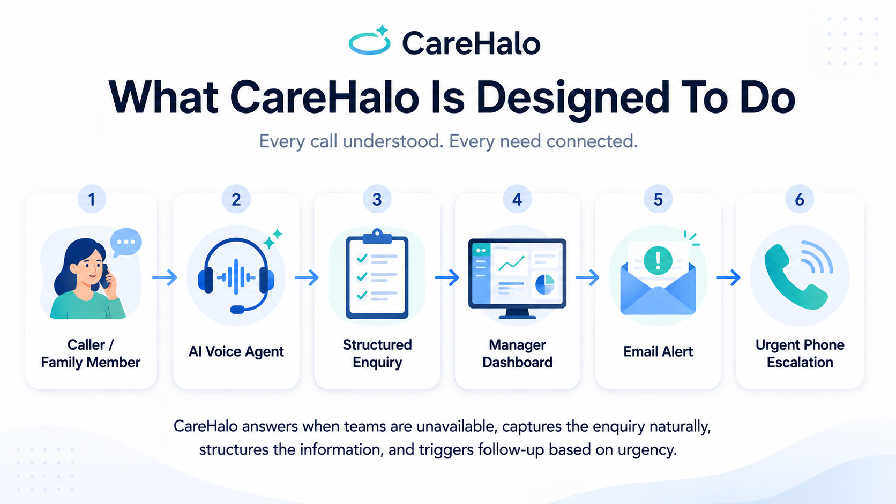
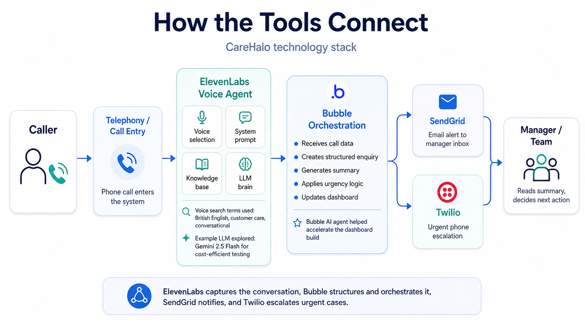

I kept coming back to one practical question: if the call matters, but nobody is available at that moment, can technology cover the gap without pretending to replace the human relationship?
01 · The idea
It started with a phone call.
Care enquiries do not arrive only between nine and five. A family might call after a hospital discharge, during an evening, or at the weekend — exactly when a team may not be able to pick up.
The question that started CareHaloWhat happens to an important enquiry when nobody is there to answer?
That became the scope: listen naturally, capture the important details, organise them clearly, and make sure a human knows when to act.

02 · The name
Why CareHalo?
I wanted the name to feel human first and technical second. The product sits around the enquiry rather than trying to become the centre of it.
Care
The person seeking support stays at the centre. The technology exists around the care need — not the other way around.
Halo
A halo surrounds and protects. That felt like the right metaphor for an intelligent support layer that can listen, capture and keep an enquiry moving until the human team can respond.
The name became a useful design rule too: human in the centre, AI around the edges.
human needprotective layerlisten + capturehuman action
Care+Halo
CareHalo
03 · Finding the voice
I started with the voice.
I tried Vapi first. It helped me understand the shape of a voice-agent workflow, but the tone I was getting did not quite fit the calm, natural British customer-care feel I wanted for this use case.
So I kept looking. That led me to ElevenLabs — and then to a surprisingly practical task: finding a voice that sounded less like a demo and more like a real conversation.

What I searchedBritish English · customer care · conversational · calm · natural
Listening became part of the design.
I tested different voices, pacing and conversational styles. The difference between “technically good” and “comfortable to listen to” was bigger than I expected.
Voice quality mattered, but it turned out not to be the hardest part.
04 · Making it feel human
Choosing the voice turned out to be the easy part.
The agent could sound good and still behave like a bot. It answered too quickly, occasionally interrupted, and could turn a sensitive conversation into a rigid questionnaire.
So I kept changing the system prompt. Small instructions around pausing, listening and confirming contact details made a noticeable difference to the feel of the conversation.
System prompt · working notes
Speak in a calm, warm and natural way. Allow the caller to finish before responding.
Do not rush through questions. Use natural pauses and follow the conversation rather than sounding scripted.
Capture the important care details and confirm phone numbers and email addresses carefully.
If something is unclear, ask once in a simple way. Do not turn the call into a checklist.
What testing changed
- Less interruption
- More natural pauses
- Better contact-detail capture
- Fewer rigid question sequences
- Clearer urgency handling
What surprised meThis part took more iteration than I expected. Small prompt changes could completely change how human the call felt.
Giving the agent context
A natural voice is not useful if it knows nothing about the service.
For safe testing I created a fictional care home, Meadowbrook, and used dummy service information rather than real customer or care data.
Meadowbrook knowledge base
Care typesRespite careDementia careFAQsGeneral service detailsRating contextAdmissions information
05 · Under the voice
Then I looked at the brain behind the conversation.
Inside ElevenLabs, the LLM is the reasoning layer. I wanted to understand not only which models were available, but what the economics looked like once minutes started adding up.

The model selector inside ElevenLabs.

Gemini 2.5 Flash · approximately $0.0097/min in this estimate.

Claude Opus 4.7 · approximately $0.3233/min in this estimate.
My choice → Gemini 2.5 Flash
For this prototype, latency and economics mattered more than simply selecting the most expensive model. The screenshots above are illustrative estimates from the tooling at the time of testing.
The turning point
The call worked.
But I still didn’t have a product.
A convincing AI conversation that disappears when the call ends is not much use to a team. I needed the information to become visible, structured and actionable.
↓
06 · Building the operating layer
That is where Bubble came in.
Bubble became the place where the voice call turned into a product: database, backend workflows, dashboard, urgency logic and the handoff to the human team.
I also used Bubble’s AI-assisted build capability to speed up the first UI structure. It helped with the heavy lifting, but I still had to decide what information mattered, how urgency should appear and what a manager should be able to understand at a glance.

Actual CareHalo prototype dashboard.Bubble became the operational layer.
Behind the dashboard
When the call finishes, Bubble receives the information, creates the enquiry record, stores the structured fields and routes the workflow.
The important shift was from “I have an AI call” to “I have something a manager can actually use.”
The workflow screenshot is a sanitised test view. No real care/customer data or private credentials are used in this case study.

07 · The part that became more important than I expected
From a four-minute call to a 20-second read.
A manager should not have to replay an entire recording just to understand what happened. The useful output is a clear record: who called, what they need, how urgent it is and what should happen next.

The useful bitConversation summary + recommended next action.
CallerWho is making the enquiry.
Care requirementWhat support is being discussed.
UrgencyWhether the team needs to act quickly.
Conversation summaryThe call reduced to the context a manager needs.
Recommended actionA clear next step rather than a raw transcript.
“This became one of my favourite parts of CareHalo. The value isn’t simply recording the call — it’s turning the conversation into something somebody can act on immediately.”
08 · The human handoff
What happens next?
CareHalo is not designed to keep the human out. The whole point is to get the right information to the right person when the team was not available at the moment of the call.
01 · ConversationElevenLabs
→
02 · Structure + logicBubble
→
03 · Human teamFollow-up
Normal enquirySendGrid notification → team
Urgent enquirySendGrid + Twilio escalation → team
AI ends here. Human action starts here.

09 · A question I couldn’t ignore
Where does all this data go?
Real care enquiries can contain personal information and health-related details. Once the prototype worked, privacy stopped being an abstract topic and became part of the product design.
ElevenLabs
Processes the conversation. In a real deployment, audio/transcript retention should be configured intentionally rather than left to a long default.
Bubble
Stores the structured enquiry. Authentication, privacy rules, retention and deletion all need to be designed deliberately.
SendGrid
Should receive only the minimum information needed to alert the team. Sensitive care detail is better kept inside the authenticated application.
Twilio
Handles urgent telephony escalation. Recording should only be enabled where there is a genuine and justified need.
My simple design rule: collect what is needed, store what is needed, keep it only as long as needed, and tell the caller clearly when AI is involved. A real UK care deployment would also need an appropriate lawful basis, governance for special-category data and a DPIA where required.
10 · The economics
Could this actually make financial sense?
I modelled a simple out-of-hours scenario rather than pretending AI should answer every call.
Calls / week20
Average call4 mins
Calls / month~87
Minutes / month~347
ToolAssumptionMonthly
ElevenLabs CreatorBase subscription$22.00
Additional ElevenLabs minutes~72 mins beyond included allowance$5.73
Gemini 2.5 Flash~347 mins × $0.0097/min$3.36
Bubble Web StarterApp + workflows + dashboard$32.00
SendGrid EssentialsEmail notifications$19.95
TwilioIllustrative UK telephony estimate$7.38
TotalIllustrative working estimate$90.42
Illustrative monthly stack$90.42
Based on the example above.
Approx. per handled call$1.04
At ~87 calls per month.
Software cost is only part of the question. The more useful measures are whether missed calls fall, response time improves, more enquiries become visible, and teams actually follow up on what the system captures.
11 · Looking back
What I learned building CareHalo.
The project started as a voice-AI curiosity. It ended up teaching me much more about product judgement, handoffs and what makes an AI workflow genuinely useful.
01
Voice quality isn’t enough.
Pacing, interruption behaviour and listening matter just as much as the sound of the voice.
02
Prompting is iterative.
The first prompt is only a starting point. Real testing reveals the awkward moments.
03
A conversation isn’t a workflow.
The value appears when the conversation becomes structured information and a clear next action.
04
The summary may matter more than the recording.
Managers need to understand the situation quickly, not replay every minute of a call.
05
Integration is where separate tools become a product.
Voice, app logic, email and telephony only become CareHalo when the handoffs work together.
06
AI works best here as coverage, not replacement.
The strongest role is filling the gap when the human team cannot answer immediately.
CareHalo
What started as a question became a working end-to-end prototype.
Every call understood. Every need connected. AI covers the gap; humans stay responsible for the relationship and the action that follows.